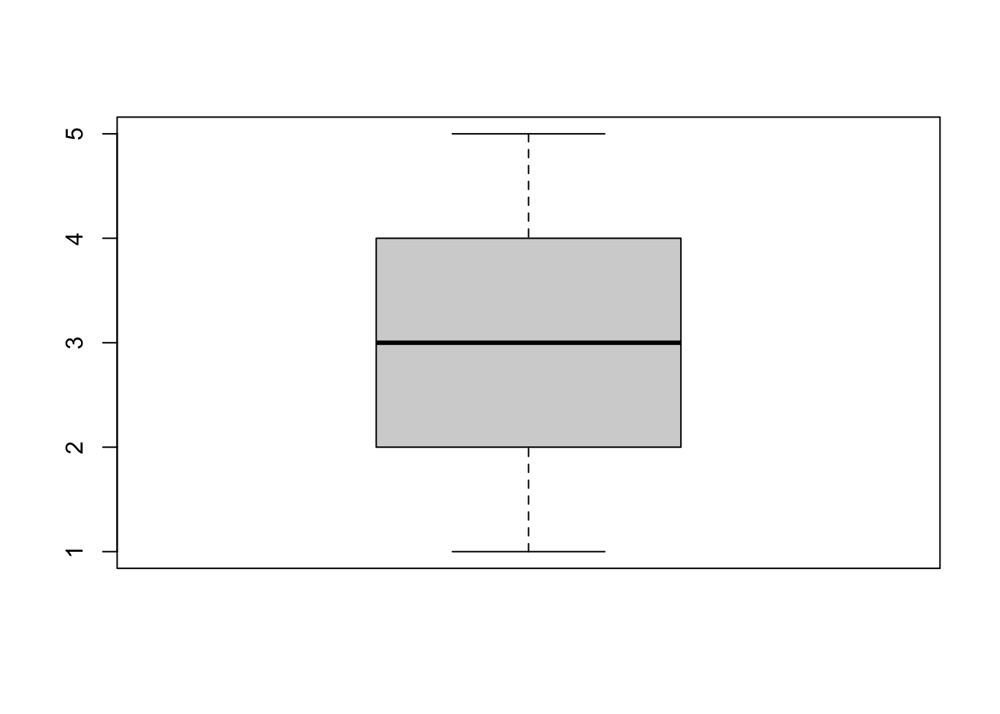
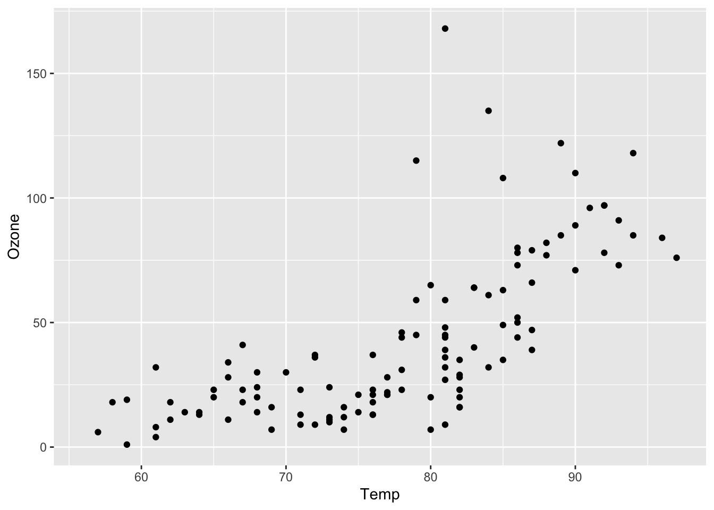

sum(c(0, 1, 2, 3))[1] 6For those without a background in using R, this page will contain a semi-exhaustive list of important tidbits about the R language that will be useful to know for this class. Some of these topics will be visited and revisted throughout class lectures, but we wanted a central location for some of the key features of R you should know.
tidyverse packages have their own spin on the R languageR is a computer language. R is primarily used for statistical analysis and graphics development, including but not limited to:
There are many other statistical programs, such as STATA, SAS, and SPSS. What differentiates R from other statistical programs is that R is a language, not a program. Wherein STATA you program your computer to complete a set of pre-determined commands, you can develop your own set of commands in R from scratch.
This is because much of R is essentially an interpreter of C, C++, and Fortran, making its uses much more flexible and varied than other statistical programs. In programs like STATA, you are limited to the set of commands already made available to you. Meanwhile, if a particular command does not exist in R, you can create it yourself.
This is because R is a functional language. In other words, nearly all of the commands in R can be performed using some function f(x):
sum(c(0, 1, 2, 3))[1] 6where in this instance, f() is sum(), and x is the vector c(0, 1, 2, 3). However, if the sum() function did not exist, you could create your own:
# initialize that you want to create a function called `my_sum()`
my_sum <- function(x) {
# Initialize the sum to 0
total <- 0
# Iterate through the vector and add each element to the total
for (val in x) {
total <- total + val
}
# Return the final sum
return(total)
}
my_sum(c(0, 1, 2, 3))[1] 6This is part of what separates R from other statistical programs. Anyone can create functions, and as a result, R is a composite of packages (i.e., set of related functions) that many independent developers created and made freely available to anyone with a computer and internet. This makes R open source. Meanwhile, programs like STATA and SAS are examples of closed source programs, meaning that the code is owned and modified by STATA and SAS developers only. This is why R is free to use, while STATA and SAS require paid licenses.
Note! There are advantages and disadvantages to open-sourced programs. R is much more diverse as a result of its thousands of packages; however, it is up each developer to ensure their code and packages work correctly. Programs like STATA is less diverse due to being closed-source; however, STATA ensures that its code works as intended.
R is also a vectorized language. This means that operations are applied to entire vectors at once, rather than element by element. What this means in practice is that R is much more efficient when it is analyzing vectors. For example, say you want to know element-by-element the sums of two vectors: c(1, 2, 3) and c(3, 2, 1). Whereas many other languages require looping through the k=3 elements of each vector:
vector_sum <- c()
for(i in 1:3){
vector_sum[i] <- c(1, 2, 3)[i] + c(3, 2, 1)[i]
}
print(vector_sum)[1] 4 4 4you can simply add two vectors in R:
c(1, 2, 3) + c(3, 2, 1)[1] 4 4 4Understanding that R is a vectorized language is not important if you work with small-to-medium data. However, when analyzing big data, this point is critical. This is because every form of data in R (e.g., a vector, list, data frame, tibble) is stored on your own computer as an array of vectors and is read from top-to-bottom then left-to-right. Thus, each column in your dataset is a vector, making it much more efficient to operate on a column than on a row.
While R is a computer language, RStudio is an Integrated Development Environment (IDE) that provides you with a more user-friendly interface when coding in R. RStudio allows you to write a .r script that can execute that R code, debug it, find typos, provide you with a window for plots you generate, and display all of the data types stored in your current environment.
Note! It is not necessary to use RStudio to run R code; however, RStudio will make it much easier to develop your R code.
Before you start diving into manipulating and analyzing code, there are some basic prerequisites you need to master:
While you can code using the R console, using an R script provides you with the ability to save your code, quickly edit and debug any errors, and reproduce similar analyses in the future. You’ll notice you have a few options when opening a new file in R, such as an R script, Quarto document, RMarkdown file, and many more. For simplicity, begin using an R script, which will open the simplest blank R file that will allow you to execute commands in a sequential manner.
All files in your computer can be accessed using different file paths. Your working directory is the file path that you point your computer towards when reading documents. It is good coding practice to create a new folder for a particular coding project that will house all documents related to your analysis (e.g., datasets, code, figures created, etc.). You want to specify this particular project folder as your working directory to make it easier when loading in or creating new files while coding.
When you first open R, your working directory is your entire computer, as you have not yet specified a particular folder. You can specify this folder using the set working directory command (setwd()). For example, on a Apple Macbook, let’s say my username is industrialhygiene, and I have a folder under the file path Documents > Coding > EHS655 such that “EHS655” is the main folder name where I will be doing my R analysis. Then, I can set the working directory using the following code:
setwd("/Users/industrialhygiene/Documents/Coding/EHS655")Now, if I read in a dataset file (e.g., “noise_data.csv”), I can simply call the dataset filename directly since my RStudio already knows we are in the “EHS655” folder:
read.csv("noise_data.csv")Otherwise, if I did not set my working directory already, I would’ve needed to read the file using the entire file path, since my RStudio would not have understood what folder to look in:
read.csv("/Users/industrialhygiene/Documents/Coding/EHS655/noise_data.csv")This approach works, but it is simpler and more ideal for code reproducibility to store all your project files in a single folder and set your working directory to that folder.
All functions that are stored in R to run a particular command are stored in packages. Already initialized in your RStudio when you first open it are “base R” packages, such as the base, datasets, and utils packages. If you want to install a new package to use additional commands, you will have to install and load them into your environment manually. This is unlike other licensed statistical programs, such as STATA, which are already pre-loaded with all of the possible commands as soon as you open the program.
For example, base R does not have the ability to read excel files. In order to do this, you will have to first install the xlsx package.
install.packages("xlsx")However, you have not yet loaded the package into your R environment so that you can use its commands. At this point, you have simply downloaded the files into your own computer so that the pacakge can be used in the future. To load the package, you use the library() function.
library("xlsx")Now that you have run this code, you are ready to use the functions in the xlsx package. You can quickly view the available functions in RStudio by typing xlsx::. The :: tell your R console to look at the particular package only. Otherwise, you can search package documentation on the internet to look up the particular functions in your package
Note! You will have to run the “library()” command every time you open your RStudio to use the loaded functions.
Finding new R packages to download will come naturally from searching online for new coding techniques. Over time, there will be some packages you notice that you use over and over again, and you will get into the habit of always loading in these packages as soon as you open a new R script.
The code presented below is just a primer of the main syntax, operations, and data types of R. It is not exhaustive. There are many tutorials and books online that provide in-depth details on this topics.
You can output text using single or double quotes:
'Hello SPH!'[1] "Hello SPH!"You can output numbers by just typing the number:
8[1] 8You can perform basic mathematical operations:
2+2
2-2
2*2
2/2
2^2You can assign and store a variable or data type using the assignment operator <-, ->:
# a vector named x
x <- 1You can print this variable by just directly calling it or using the print() function:
x[1] 1A form of logical values (i.e., TRUE or FALSE) using:
>: greater than>=: greater than or equal to<: less than<: less than or equal to==: equal to!=: not equal to4 >= 3[1] TRUEThere are many types of ways to store data in R, including:
You can create a vector of any size using c():
y <- c(1, 2, 3, 4, 5)You can perform basic mathematical operations of vectors using sum(), mean(), sd(), var(), median(), IQR(), range(), quantile(), length():
mean(y)[1] 3You can visualize simple plots of vectors using hist(), barplot(), boxplot():
boxplot(y)
A list is a set of vectors
a <- list(c(1, 2, 3), c(3, 2, 1, 0, -1, -2, -3))
print(a)[[1]]
[1] 1 2 3
[[2]]
[1] 3 2 1 0 -1 -2 -3Which is equivalent to making a dataframe of not necessarily the same lengths
df <- data.frame(x = c(0, -1, 2), y = c(3, 2, 1))
df x y
1 0 3
2 -1 2
3 2 1There are three main forms of accessing data:
[ ] to access a particular index of a vector[[ ]] to access a particular index of a list$ to access an entire vector# get the third element of vector y
y <- c(1, 2, 3, 4, 5)
y[3][1] 3# get the third vector of list b
b <- list(c("Zebra"), c(1, 2, 3), c(-2, 0, 2, 4, 6))
b[[3]][1] -2 0 2 4 6# get the first column of dataframe df2
df2 <- data.frame(a = c("Apple", "Banana", "Chocolate"),
b = c(5, 10, 15))
df2$a[1] "Apple" "Banana" "Chocolate"While base R code is incredibly versatile, modern R users utilize the tidyverse package for data wrangling, visualization, and simple analysis, which comes with its own, slight variation on coding with R. This book will primarily use tidyverse for most code.
Let’s install and load the tidyverse package.
install.packages("tidyverse")library("tidyverse")── Attaching core tidyverse packages ──────────────────────── tidyverse 2.0.0 ──
✔ dplyr 1.1.4 ✔ readr 2.1.5
✔ forcats 1.0.0 ✔ stringr 1.5.2
✔ ggplot2 4.0.0 ✔ tibble 3.3.0
✔ lubridate 1.9.4 ✔ tidyr 1.3.1
✔ purrr 1.1.0
── Conflicts ────────────────────────────────────────── tidyverse_conflicts() ──
✖ dplyr::filter() masks stats::filter()
✖ dplyr::lag() masks stats::lag()
ℹ Use the conflicted package (<http://conflicted.r-lib.org/>) to force all conflicts to become errorsThe tidyverse is package that loads multiple packages that work in harmony with each other.
dplyr - for data wrangling and manipulationforcats - for reordering factor variablesggplot2 - for data visualizationlubridate - used for handling date and time datapurrr - a functional programming toolkitreadr - for reading reading data filesstringr - for handling string variablestibble - provides better formatting for data framestidyr - provides tools to handle tibble-formatted data frameTo demonstrate the basic features of these packages, we will use the airquality dataframe that is pre-loaded into the base R package datasets. We will store this dataframe under the name aq_df.
aq_df <- datasets::airqualitytibbleLet’s view simply what the dataset looks like.
head(aq_df) Ozone Solar.R Wind Temp Month Day
1 41 190 7.4 67 5 1
2 36 118 8.0 72 5 2
3 12 149 12.6 74 5 3
4 18 313 11.5 62 5 4
5 NA NA 14.3 56 5 5
6 28 NA 14.9 66 5 6We can see that that there are six columns related to ozone, solar radiation levels, wind spead, temperature, the month and day. We can view what the dataset type is using the class() function
class(aq_df)[1] "data.frame"We can see that the dataset is stored in R as a “data.frame”, not a “tibble”. We can change this using the as_tibble() function. Reminder that in order to save this change in our local R environment, we have to reassign the command to aq_df.
aq_df <- as_tibble(aq_df)Now, we can check the class of the dataset to see if it is a tibble.
class(aq_df)[1] "tbl_df" "tbl" "data.frame"We can indeed see that the class of “aq_df” is “tbl”, analagous to “tibble”.
dplyrarrange()We can sort the dataframe by a particular column(s) using the arrange() function. Let’s do this by ascending temperature
arrange(aq_df, Temp)# A tibble: 153 × 6
Ozone Solar.R Wind Temp Month Day
<int> <int> <dbl> <int> <int> <int>
1 NA NA 14.3 56 5 5
2 6 78 18.4 57 5 18
3 NA 66 16.6 57 5 25
4 NA NA 8 57 5 27
5 18 65 13.2 58 5 15
6 NA 266 14.9 58 5 26
7 19 99 13.8 59 5 8
8 1 8 9.7 59 5 21
9 8 19 20.1 61 5 9
10 4 25 9.7 61 5 23
# ℹ 143 more rowsIf we wanted to do this by descending temperature, we could insert a hyphen in front of the column name.
arrange(aq_df, -Temp)# A tibble: 153 × 6
Ozone Solar.R Wind Temp Month Day
<int> <int> <dbl> <int> <int> <int>
1 76 203 9.7 97 8 28
2 84 237 6.3 96 8 30
3 118 225 2.3 94 8 29
4 85 188 6.3 94 8 31
5 NA 259 10.9 93 6 11
6 73 183 2.8 93 9 3
7 91 189 4.6 93 9 4
8 NA 250 9.2 92 6 12
9 97 267 6.3 92 7 8
10 97 272 5.7 92 7 9
# ℹ 143 more rowsWe can even sort by more than one column. Let’s sort by day and then month.
arrange(aq_df, Day, Month)# A tibble: 153 × 6
Ozone Solar.R Wind Temp Month Day
<int> <int> <dbl> <int> <int> <int>
1 41 190 7.4 67 5 1
2 NA 286 8.6 78 6 1
3 135 269 4.1 84 7 1
4 39 83 6.9 81 8 1
5 96 167 6.9 91 9 1
6 36 118 8 72 5 2
7 NA 287 9.7 74 6 2
8 49 248 9.2 85 7 2
9 9 24 13.8 81 8 2
10 78 197 5.1 92 9 2
# ℹ 143 more rowsselect()We can keep or remove certain columns using the select() function. For example, let’s say we know we will not use solar radiation for our particular analysis. We can remove it using a hyphen in front of the column name.
select(aq_df, -Solar.R)# A tibble: 153 × 5
Ozone Wind Temp Month Day
<int> <dbl> <int> <int> <int>
1 41 7.4 67 5 1
2 36 8 72 5 2
3 12 12.6 74 5 3
4 18 11.5 62 5 4
5 NA 14.3 56 5 5
6 28 14.9 66 5 6
7 23 8.6 65 5 7
8 19 13.8 59 5 8
9 8 20.1 61 5 9
10 NA 8.6 69 5 10
# ℹ 143 more rowsAs you can see, the solar radiation column has been removed. Let’s say we knew we only wanted to keep ozone levels, month, and day. We can specify that we only want to keep these columns as well.
select(aq_df, Ozone, Month, Day)# A tibble: 153 × 3
Ozone Month Day
<int> <int> <int>
1 41 5 1
2 36 5 2
3 12 5 3
4 18 5 4
5 NA 5 5
6 28 5 6
7 23 5 7
8 19 5 8
9 8 5 9
10 NA 5 10
# ℹ 143 more rowsfilter()Just as we can remove certain columns from our dataset, we can remove certain rows using the filter() function. Let’s say we only cared about ozone levels in May. We can specify a boolean argument.
filter(aq_df, Month == 5)# A tibble: 31 × 6
Ozone Solar.R Wind Temp Month Day
<int> <int> <dbl> <int> <int> <int>
1 41 190 7.4 67 5 1
2 36 118 8 72 5 2
3 12 149 12.6 74 5 3
4 18 313 11.5 62 5 4
5 NA NA 14.3 56 5 5
6 28 NA 14.9 66 5 6
7 23 299 8.6 65 5 7
8 19 99 13.8 59 5 8
9 8 19 20.1 61 5 9
10 NA 194 8.6 69 5 10
# ℹ 21 more rowsNotice that we are down to 31 rows from the original 153 rows now, since all the data outside of May has been removed.
mutate()We can make new columns using the mutate() function. Let’s say we are interested in creating an indicator variable for days when the ozone levels are above a certain threshold, say, 30. We can use the ifelse() function within the mutate() function to set the row to the value 1 if the ozone level is >30, and 0 otherwise. We will name it “Ozone_above_30”.
mutate(aq_df, Ozone_above_30 = ifelse(Ozone > 30, 1, 0))# A tibble: 153 × 7
Ozone Solar.R Wind Temp Month Day Ozone_above_30
<int> <int> <dbl> <int> <int> <int> <dbl>
1 41 190 7.4 67 5 1 1
2 36 118 8 72 5 2 1
3 12 149 12.6 74 5 3 0
4 18 313 11.5 62 5 4 0
5 NA NA 14.3 56 5 5 NA
6 28 NA 14.9 66 5 6 0
7 23 299 8.6 65 5 7 0
8 19 99 13.8 59 5 8 0
9 8 19 20.1 61 5 9 0
10 NA 194 8.6 69 5 10 NA
# ℹ 143 more rows%>%Let’s say we wanted to arrange, select, filter, and mutate our dataset all in one line of code. In order to achieve this, we could do something like the following.
mutate(filter(select(arrange(aq_df, -Temp), -Solar.R), Month == 5), Ozone_above_30 = ifelse(Ozone > 30, 1, 0))# A tibble: 31 × 6
Ozone Wind Temp Month Day Ozone_above_30
<int> <dbl> <int> <int> <int> <dbl>
1 45 14.9 81 5 29 1
2 115 5.7 79 5 30 1
3 37 7.4 76 5 31 1
4 12 12.6 74 5 3 0
5 7 6.9 74 5 11 0
6 11 16.6 73 5 22 0
7 36 8 72 5 2 1
8 NA 8.6 69 5 10 NA
9 16 9.7 69 5 12 0
10 14 10.9 68 5 14 0
# ℹ 21 more rowsAs you can see from the code above, this operation is difficult to read and difficult to debug if there is an error in the code. For example, try to find what is wrong with this line of code.
mutate(filter(select(arrange(aq_df, -Temp), -Solar.R) Month == 5), Ozone_above_30 = ifelse(Ozone > 30, 1, 0))You may have quickly noticed that the comma after the `select(…, -Solar.R)” function is missing, but on another day when you’re tired, you might miss this error and spend 30 minutes slamming your head onto your desk wondering why your code doesn’t run even though it looks perfectly fine. Also, many R error messages are not very accurate. For example, this error says “unexpected symbol” when the problem is that it’s missing a symbol (i.e., the comma).
Additionally, the nested functions mean that the first operation (i.e., arrange(aq_df, -Temp)) is in the middle of the line of code. Similarly, mutate() is at the front despite being the last operation. This makes it tricky to quickly understand the order of operations.
The pipe operator solves this problem. The pipe operator allows you to separate separate commands in a sequential manner while retaining the ability to run the entire operation in a single command. The above code is analagous to the following:
arrange(aq_df, -Temp) %>%
select(-Solar.R) %>%
filter(Month == 5) %>%
mutate(Ozone_above_30 = ifelse(Ozone > 30, 1, 0))# A tibble: 31 × 6
Ozone Wind Temp Month Day Ozone_above_30
<int> <dbl> <int> <int> <int> <dbl>
1 45 14.9 81 5 29 1
2 115 5.7 79 5 30 1
3 37 7.4 76 5 31 1
4 12 12.6 74 5 3 0
5 7 6.9 74 5 11 0
6 11 16.6 73 5 22 0
7 36 8 72 5 2 1
8 NA 8.6 69 5 10 NA
9 16 9.7 69 5 12 0
10 14 10.9 68 5 14 0
# ℹ 21 more rowsAs you can see, using %>% allows us to first specify that we would like to arrange the data. Then, after calling the operator, we can state that we would like to remove solar radiation. Importantly, we don’t have to re-specify the dataset argument since the pipe operator carries over the dataset from the previous operation. Then, the dataset is filtered, and finally mutated.
I hope you can see that the code with the pipe operator is more digestible and easier to debug if there was an error. We will code using the pipe operator for the rest of the book.
ggplot2The best package (in our opinion) for visualization is the ggplot2 package.
Briefly, there are four main steps to a ggplot2 graph:
ggplot() functionaes() (aka, your x, y, and other aesthetics like size and shape)geom_*() (aka, the kind of graph you want to make, such as scatterplot)For example, using our aq_df dataset, we can create a scatterplot to explore whether temperature is associated with ozone levels.
aq_df %>%
ggplot(aes(x = Temp, y = Ozone)) +
geom_point()
It looks like it is! Let’s break down the four steps used in the example code above:
aq_dfggplot()aes(x = Temp, y = Ozone)
ggplot() function using the aes() functiongeom_point()
We won’t go much much deeper into ggplot2 here, as the ability to make graphs in R is wide and deep. It would not be possible to cover all of the possibilities just on this page. A great resource to learn more about ggplot2 package can be found here: https://rstudio.github.io/cheatsheets/html/data-visualization.html
We will cover different visualizations relevant to exposure assessment throughout the semester that will build your ggplot2 toolkit.